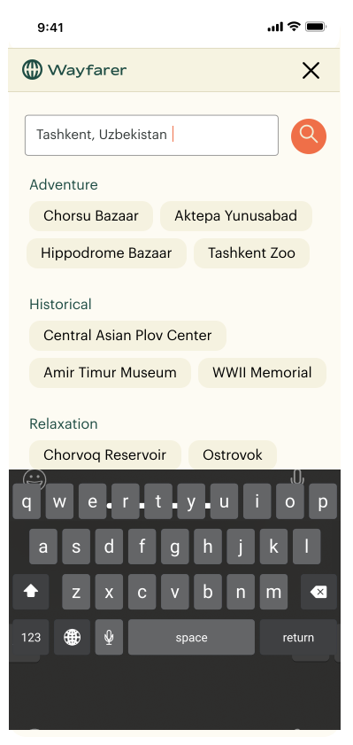

Wayfarer
UX & UI Design / Prototyping / Brand Identity


Project Overview
About Wayfarer: A destination website aimed at young people, ages 21-30, who travel frequently and are in search of new adventures worldwide.
Role / Brief: Design and prototype 3 screens: a home page on desktop and mobile, a search tool on mobile, and a destination page on mobile. Briefly research competitors to back the features and design.
Timeline: 5 day design challenge.
The Goal
- Research competitors
- Translate my findings into a prototype using:
- UX principles
- Visually appealing design patterns that also create a brand identity
Empathize + Define
Questions
- What are the traveler’s motivations and pain points when planning or discovering trips?
- What influences a traveler to choose a landmark?
- How can the design visually enhance the user’s experience while browsing for destinations?
- What is the best way to structure the site so the user isn’t overwhelmed?
- What features would be useful or expected when searching for travel destinations?
Competitive Analysis
I wanted to understand what kind of tone destination sites use, what kind of features would be useful for a traveler, and how information is structured.
Fathom

Tone: Minimalist design and copy.
-
Simplicity
-
Neutral colors were calming
-
In-depth experiences of destinations
-
Unable to save destinations or read reviews
-
Weak search tool
-
No hierarchy in destination pages
-
Too much story-telling, not enough useful resources and tools that help a traveler
Atlas Obscura

Tone: Earthy and outdoorsy.
-
Many ways to discover destinations (ie blogs, featured/popular, tags, or search tool)
-
Strong search tool with recommendations
-
Destinations have a good balance of storytelling and information
-
Unusual visual hierarchy on destination page
-
Information is useful but overwhelming
Solution proposals
- Generate various ways you can discover destinations: strengthen the search tool, categorize destinations based on popularity, featured, top cities, or blogs/storytelling.
- Keep the UI minimal: Provide useful at-a-glance info, but allow the user to expand more detailed info, when needed.
- Curate experiences: Allow users to create accounts to receive relevant recommendations, keep track of visited/favorite destinations, and leave reviews.
Ideation
Home page (Desktop) Wireframes
Search tool (Mobile) Wireframes
How can we create multiple avenues for searching destinations?
Experimentation with the visual hierarchy. I wasn’t a fan of the 3-column system.
Images felt small on mobile. On the final prototype, I found a middle ground between this frame and the last one.
Destination Page (Mobile) Wireframes
Experimenting with the side nav bar. I realized this wasn’t a good use of space.
Experimentation with segmented control in the nav bar. Hiding detailed info ensures the user isn’t overwhelmed.
Prototype & Testing
Header & Body - Type Selection
Color Palette Selection
The palette colors are borrowed from the outdoors. This is very applicable for the brand and the subtle pop of colors are very youthful and energizing.
Icons
Logo - Type Selection & Kerning
For the logo font selection, I had two criterias:
1. The font must differentiate itself from the body and header fonts
2. The type must be youthful, adventurous, and effortlessly blend with the logo symbol.
After I made my decision, I applied letter kerning.
Destination Card - Type Selection

-
Clean and modern
-
Targeting a different kind of audience
-
Our audience is young and this type doesn’t feel adventurous

-
Sleek, minimal, and easy-to-read
-
Curvyness of the type is very fun
-
Sans-serif font feels too similar to the description

-
Pairs well with the sans-serif description
-
Serif font evokes history, but is not too serious
Destination Card - Accessibility

This version fell below accessibility standards with some background photos. My test participant gave feedback on how the words were hard to read at times.

After user feedback, a white circle was added behind the heart, for better accessibility and contrast. Also, the gradient was increased for improved readability.
Blog - Structure

The structure felt somewhat unbalanced and the title of each blog article did not stand out.

A few things changed:
- Removed the underline in “See all” since the arrow hinted you could click on it.
- Shortened the text block width for better readability.
- Ran a contrast check, and darkened the title & description.
- Increased padding because all the blog posts had high proximity.
Search Tool (Default State)
Initially, these two buttons were available to give the user an option to explore.
Recommending specific destinations could be more useful when a user is browsing.

Changed the colors on CTA buttons to prioritize “Places near me”. Search box’s backgorund color is true white for more contrast.
Search Tool (Active State)
As the user types in a search query, recommendations start to update on the fly.
Destination Page
Users are able to swipe through photos, read a brief description, take action with the buttons, or continue to scroll for more info.
Destination Page - Segmented Control
Overview gives a more thorough background and history on a destination.
Directions has an address and map, and contact numbers if applicable.
The reviews feature popular keywords mentioned by other travelers and an option to filter reviews.
Final Result
Scroll through the interactive figma prototypes below to see the finished result!
Desktop Home Screen
Mobile Home Screen
Key Learnings
- Improving readability: Searching for destinations is information-heavy. Visual hierarchy, color contrast, and segmented control helps organize dense information and maintains simplicity for users who are browsing.
- A bit of research goes a long way: I wish I had more bandwidth to research thoroughly; however, working within a time constraint, I learned that even a bit of research went far. Running a competitive analysis provided insight when it came to prioritizing features and branding/styling decisions.